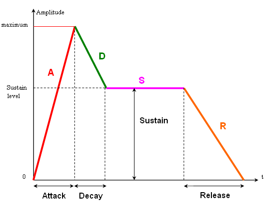
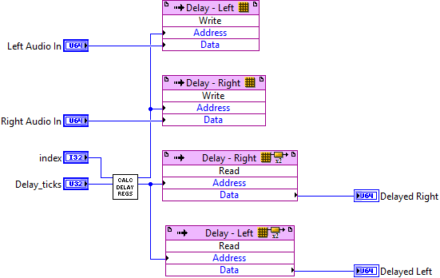

Our application leverages the power and flexibility of the myRIO’s ARM® Cortex™-A9 real-time processing and Xilinx FPGA customizable I/O to create a device that provides the functionality of a four-track recorder with some unique add-ons. With our application, we are able to:
•Perform real-time DSP by leveraging the FPGA for our audio acquisition, processing and playback.
•Quickly stream binary data to and from disc on the real-time host.
•Synthesize waveforms on the real-time host, pass them to the FPGA for processing, and then return them to the host for recording and playback.
•Communicate over a 3rd party protocol (MIDI) quickly and efficiently by implementing our driver on the FPGA.
•Leverage the myRIO’s web server to host a thin client—or custom web page—that allows the user to monitor the system.
With the myRIO’s wide feature set, flexibility, and power—developing a full-featured embedded system is within the reach of students and professional engineers alike.
Using the myRIO’s FPGA, we are able to implement our digital signal processing in hardware rather than software. This gives us increased speed and performance over a real-time implementation.
Our data for each channel comes from the Real-Time host through a DMA FIFO in the form of an unsigned 64-bit number. We then split that 64-bit number in to 4 equal parts, each representing a track of audio. We then add each split part together on the FPGA to create a composite signal.

To generate more natural keyboard sounds, we implemented an Envelope filter. This filter has six parameters that modify the amplitude of our input signal, in this case a sine wave:
Attack- Given in milliseconds, this determines the amount of time it takes for the signal to go from completely off to our maximum amplitude.
Attack %- The maximum amplitude that the attack phase will reach.
Decay- The amount of time it takes for our signal to transition from the peak of the attack phase to the beginning of the sustain phase. This stage works in tandem with the attack phase to simulate the percussive loudness that comes with applying force to a traditional instrument.
Sustain- The length of time to hold the tone at a constant amplitude.
Sustain %- The level that the sustain phase will hold the note.
Release- At the completion of the sustain phase, the filter then returns to 0 amplitude in the timeframe specified by this parameter.
To create an echo effect, we store approximately 100 ms of the audio being written out to the FPGA. We can then recall samples from that block memory to be summed in to our output at a later time.
Using the myRIO’s on-board Audio I/O, we are able to capture and play back audio at rates in excess of CD-quality, or 44101 samples per second. As you can see from the code below, using LabVIEW FPGA makes creating and using DMA FIFOs for streaming to and from the host trivial in comparison to traditional implementation methods.

TDMS—or the Technical Data Management System format—has many advantages. It’s exchangeable, compact, searchable, capable of high-speed streaming, and allows for random access. By leveraging TDMS, we are able to quickly read and write data to the myRIO’s internal storage.


MIDI—or the Musical Instrument Digital Interface—is a 3rd party communication protocol that allows a wide variety of electronic musical devices to interface with each other. By creating a MIDI driver for the myRIO, we are able to use a wide variety of 3rd party devices to control our application.
The baud rate of MIDI communication is 31250 bits per second. This is a non-standard baud rate, so a custom driver implementation was necessary. We began with our FPGA implementation, where we were able to implement our desired baud rate using the LabVIEW FPGA timing Vis to synchronize reading the MIDI input. We then use a DMA FIFO to pass each byte up the the real-time host where it is used to control our application.

The Real-Time host application handles:
•Resetting the state of the device on startup, initializing the file I/O and FPGA
•The application logic for the fourtrack
•Getting MIDI commands from the FPGA
•Displaying a metronome using the lights on the myRIO
•Cleaning up and shutting down our application.

The myRIO--like virtually all of National Instruments' embedded products--is capable of acting as a web server and can serve up